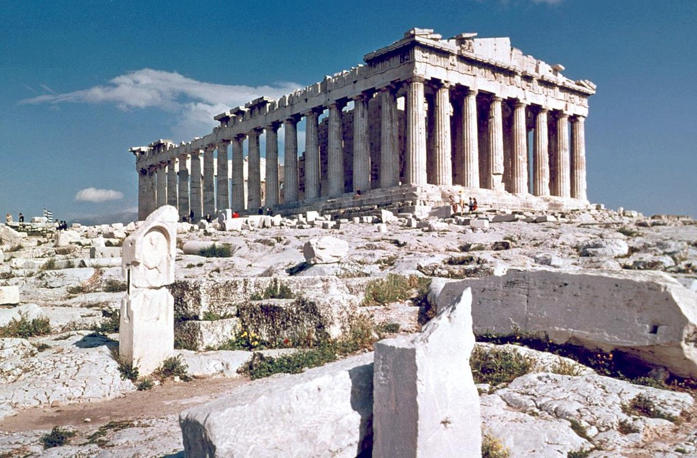
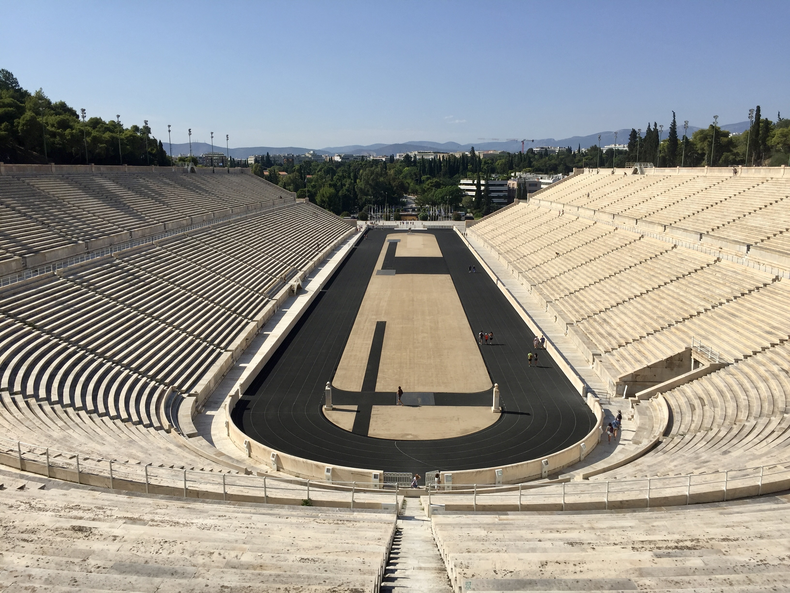
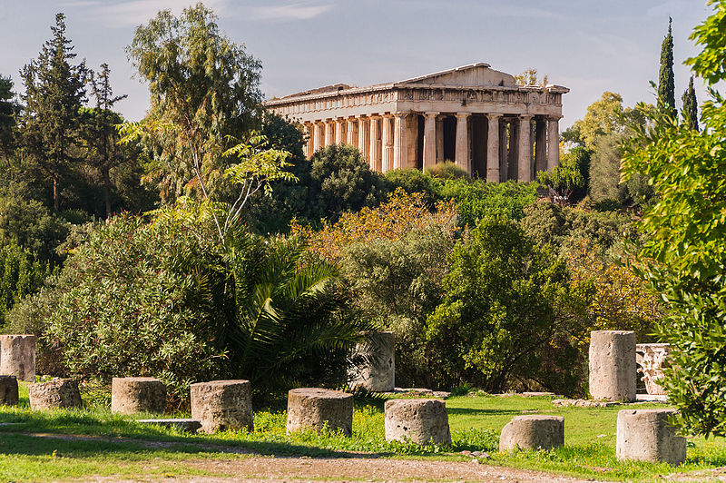

Athens is well-known for its rich history and the marvelous landmarks it left behind. Here we are going to talk about three monuments you must visit in Athens
03 June 2020
Author: Greek TravelTellers
One of the most popular sites and sights in the world, the iconic Parthenon, is dominating the heart of Athens. Just a look at this historical landmark is enough to impress you! The great monument of the Parthenon is a symbol of Greece, of Democracy and all the values the Ancient Greek civilization represented. A visit to Athens cannot be considered a proper visit without a tour of the Acropolis and it is on the top of the list for all first-time travelers to the Greek capital. The Parthenon, the temple of the virgin goddess, Athena, is not the only monument of great value on the rock of Acropolis. There are many impressive buildings on the site, like the Erechtheion with the famous Caryatids (which is, actually, the most sacred building on Acropolis), the Temple of Athena Nike and the impressive Propylaea. Traveling on the rock of Acropolis is like traveling back in time. The place that was closely associated with some of the most important mythological stories is the ideal place to enjoy a mythology tour and discover the mindset of the people that built this unique monument. The view from the top of Acropolis Hill is also breathtaking. The whole city of Athens is at your feet but at the same time, you feel like you are in another area, far away from the hustle and bustle of the modern city. For a more complete experience, you should combine your visit to the Acropolis site with a tour of the new Acropolis Museum, which is located at the base of the Hill. The museum exhibits all the artifacts that were found on Acropolis during the excavations and it will complete your understanding of the role of Acropolis in the lives of the Ancient Athenians.
Parthenon Temple
This landmark of Athens is located next to the Temple of Olympian Zeus. It is the stage of the first Modern Olympic Games! Being the only stadium in the world built entirely of marble, the Panathenaic Stadium is located on top of an ancient stadium that was used primarily for the Panathenaic Games. The Olympic Hymn was heard for the first time in this stadium and it is the finishing line of the authentic Athens Classic Marathon. The Ancient Greeks had the saying “Nous hugieis en somati hugiei”, meaning “healthy mind in healthy body”. Sports and sports competitions were a huge part of their life and this stadium was a symbol of unity for all Athenians as its name suggests (Pan-Athenaic, “all Athenians”).
Landmark of the Panathenaic Stadium
Another great monument of Athens that you should not miss. The Temple of Hephaestus is located inside the Ancient Agora and it is actually one of the best-preserved temples of Greek antiquity. In the beginning, there was a misconception about this landmark since the archaeologists considered it a temple dedicated to the Athenian hero Theseus. Scenes of the heroes’ labors on the metopes of the temple led to this misconception. Later findings, however, proved that this was a temple dedicated actually to the god of blacksmiths and craftsmen, Hephaestus. The goddess of wisdom, Athena, was also worshipped in this temple, with her bronze statue positioned just next to the one of Hephaestus, as described by the ancient traveler and geographer Pausanias. Unfortunately, the statues of the gods were never found, but the outside of the temple is really worth a visit! If you pay close attention, you will be able to see scenes from the labors of Hercules at the metopes of its east side, while the metopes of its south side depict scenes from the labors of Theseus. The misconception of the figure that was worshipped in this temple led to the ‘false’ naming of the surrounding area, which is still called Thesseio, after Theseus. From this monument, you can admire clear views of the Acropolis Hill and in the surrounding area, you will find small traders and craftsmen, selling their handmade creations in the same place for more than 2000 years!
Monument of the Temple Of Hephaestus